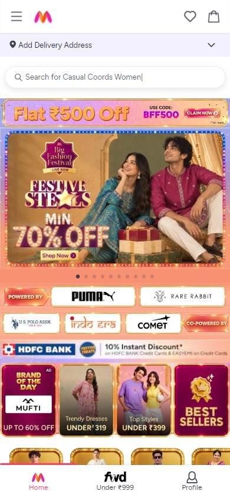
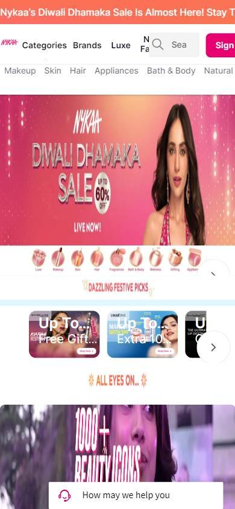
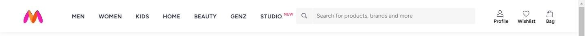
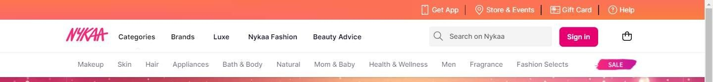
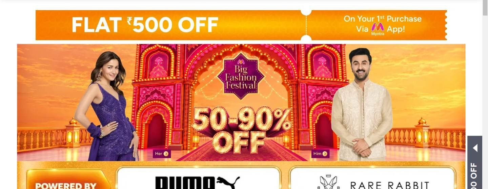
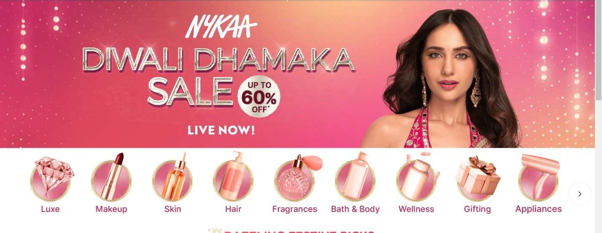

Tienda online que compite por calidad o marca
Los seleccionados
Los dos sitios más visitados que compiten de esta forma, según estadísticas de tráfico.
En resumen: lo que hacen los líderes
La pantalla de inicio de cada uno


Estilo visual
Colores, imágenes, tipografía y cuánta información muestran.
Tu estilo visual debería…
- Campañas con modelos y descuentos en números enormes; rosa y colores festivos funcionan muy bien.
Lo que tienen en común: Campañas festivas muy coloridas, con modelos, logos de marcas y descuentos en números enormes.
La paleta de cada uno
Medida sobre la primera pantalla. Los colores de marca salen del header; el resto muestra cuánto espacio ocupa cada color.
Así lo resuelve cada uno
Ficha comparativa
| Aspecto | Myntra | Nykaa |
|---|---|---|
| Paleta | Variada: naranja, rosa, colores festivos | Acotada: rosa de marca + dorado festivo |
| Imágenes | Fotos de campaña con modelos + logos de marcas | Foto de campaña con modelo + íconos de categorías |
| TipografíaIgual en todos | Sin serifa, porcentajes enormes | Sin serifa, porcentajes enormes |
| DensidadIgual en todos | Alta | Alta |
Header
La franja de arriba con el logo y los accesos.
Tu header debería…
- Secciones en fila, buscador gris claro y botón de ingreso en el color de la marca.
Lo que tienen en común: Header blanco con secciones en fila, buscador gris claro y accesos con texto a la derecha.
Así lo resuelve cada uno


Ficha comparativa
| Aspecto | Myntra | Nykaa |
|---|---|---|
| Fondo | Blanco | Blanco + franja rosa arriba |
| Logo | A la izquierda | Rosa, a la izquierda |
| Secciones | Por público en mayúsculas (MEN, WOMEN, KIDS…) | Categorías, marcas, Luxe, moda, consejos |
| BuscadorIgual en todos | Ancho, gris claro | Ancho, gris claro |
| A la derecha | Perfil, favoritos y bolsa con texto | Botón rosa «Sign in» y bolsa |
Primera pantalla
Lo primero que se ve debajo del header.
Tu primera pantalla debería…
- Banner con el rango de descuento y categorías en círculos debajo.
Lo que tienen en común: Banner festivo con el rango de descuento y, debajo, marcas o categorías en círculos.
Así lo resuelve cada uno


Ficha comparativa
| Aspecto | Myntra | Nykaa |
|---|---|---|
| Formato | Banner de campaña con márgenes + logos de marcas | Banner de campaña a todo el ancho + círculos de categorías |
| Descuento | «50-90% OFF» | «Up to 60% off» |